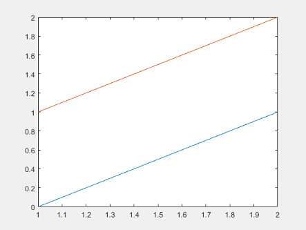
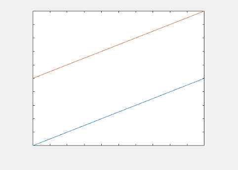
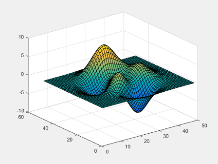
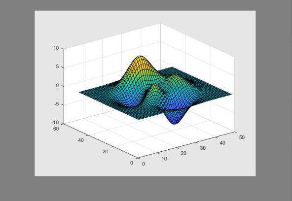
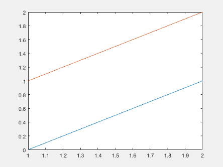
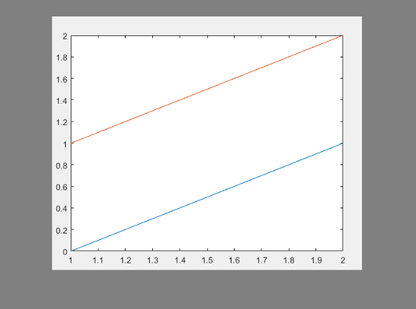
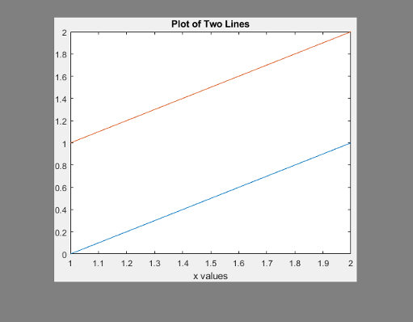
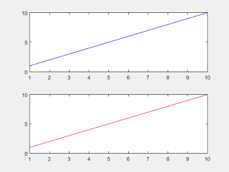
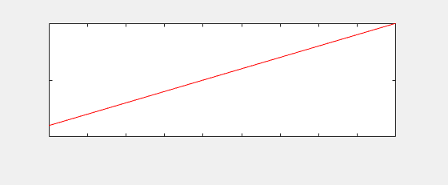

getframe
Capture axes or figure as movie frame
Description
F = getframeF is
a structure containing the image data. getframe captures
the axes at the same size that it appears on the screen. It does not
capture tick labels or other content outside the axes outline.
Examples
Plot two lines. Capture the axes and return the image data.
getframe captures the interior of the axes and the
axes outline. It does not capture content that extends beyond the axes
outline.
plot([0 1; 1 2]) F = getframe;

F is a structure with the field
cdata that contains the captured image data.
Display the captured image data using imshow.
figure imshow(F.cdata)

Create a surface plot. Capture the interior of the figure window, excluding the menu and tool bars.
surf(peaks) F = getframe(gcf);

F is a structure with the field cdata that
contains the captured image data.
Display the captured image data in a figure with a darker background using
imshow, so you can see captured area.
figure('Color',[0.5 0.5 0.5])
imshow(F.cdata)
Capture the interior of an axes plus a margin of 30 pixels in each direction. The added margin is necessary to include the tick labels in the capture frame. Depending on the size of the tick labels, the margin might need to be adjusted.
Plot two lines.
plot([0 1; 1 2])

Change the axes units to pixels and return the current axes position. The third and fourth elements of the position vector specify the axes width and height in pixels.
drawnow
ax = gca;
ax.Units = 'pixels';
pos = ax.Positionpos = 73.8000 47.2000 434.0000 342.3000
Create a four-element vector, rect,
that defines a rectangular area covering the axes plus the desired
margin. The first two elements of rect specify
the lower left corner of the rectangle relative to the lower left
corner of the axes. The last two elements of rect specify
the width and height of the rectangle. Reset the axes units to the
default value of 'normalized'.
marg = 30;
rect = [-marg, -marg, pos(3)+2*marg, pos(4)+2*marg];
F = getframe(gca,rect);
ax.Units = 'normalized';Display the captured image data in a figure with a darker background using
imshow, so you can see captured area.
figure('Color',[0.5 0.5 0.5])
imshow(F.cdata)
Calculate a margin around the axes so that the captured image data includes the title, axis labels, and tick labels.
Create a plot with a title and an x-axis label.
plot([0 1; 1 2]) xlabel('x values') title('Plot of Two Lines')

Change the axes units to pixels and store the Position and TightInset property
values for the axes. The TighInset property is
a four-element vector of the form [left bottom right top].
The values are the margins used around the axes for the tick values
and text labels.
drawnow
ax = gca;
ax.Units = 'pixels';
pos = ax.Position;
ti = ax.TightInset;Create a four-element vector, rect,
that defines a rectangular area covering the axes plus the automatically
calculated margin. The first two elements of rect specify
the lower left corner of the rectangle relative to the lower left
corner of the axes. The last two elements of rect specify
the width and height of the rectangle.
rect = [-ti(1), -ti(2), pos(3)+ti(1)+ti(3), pos(4)+ti(2)+ti(4)]; F = getframe(ax,rect);
Display the captured image data in a figure with a darker background using
imshow, so you can see captured area.
figure('Color',[0.5 0.5 0.5])
imshow(F.cdata)
Call the tiledlayout function to create a 2-by-1
tiled chart layout. Call the nexttile function to
create the axes objects ax1 and ax2.
Plot a line in each axes.
tiledlayout(2,1) ax1 = nexttile; plot(1:10,'b') ax2 = nexttile; plot(1:10,'r')

Capture the contents of the lower axes. getframe
captures the interior and border of the plot. It does not capture tick
values or labels that extend beyond the outline of the plot.
F = getframe(ax2);
Display the captured image data using imshow.
figure imshow(F.cdata)

Record frames of the peaks function
vibrating by using getframe in a loop.
Preallocate an array to store the movie frames.
Z = peaks; surf(Z) axis tight manual ax = gca; ax.NextPlot = 'replaceChildren'; loops = 40; F(loops) = struct('cdata',[],'colormap',[]); for j = 1:loops X = sin(j*pi/10)*Z; surf(X,Z) F(j) = getframe(gcf); end
Playback the movie two times.
fig = figure; movie(fig,F,2)
Input Arguments
Output Arguments
Limitations
getframe does not support capturing content in Web Apps (MATLAB Compiler).
More About
Tips
For the fastest performance when using
getframe, make sure that the figure is visible on the screen. If the figure is not visible,getframecan still capture the figure, but performance can be slower.For more control over the resolution of the image data, use the
printfunction instead. Thecdataoutput argument with print returns the image data. Theresolutioninput argument controls the resolution of the image.To ensure that colorbars and legends displayed next to 3-D plots are captured, specify the
figargument when you callgetframe.